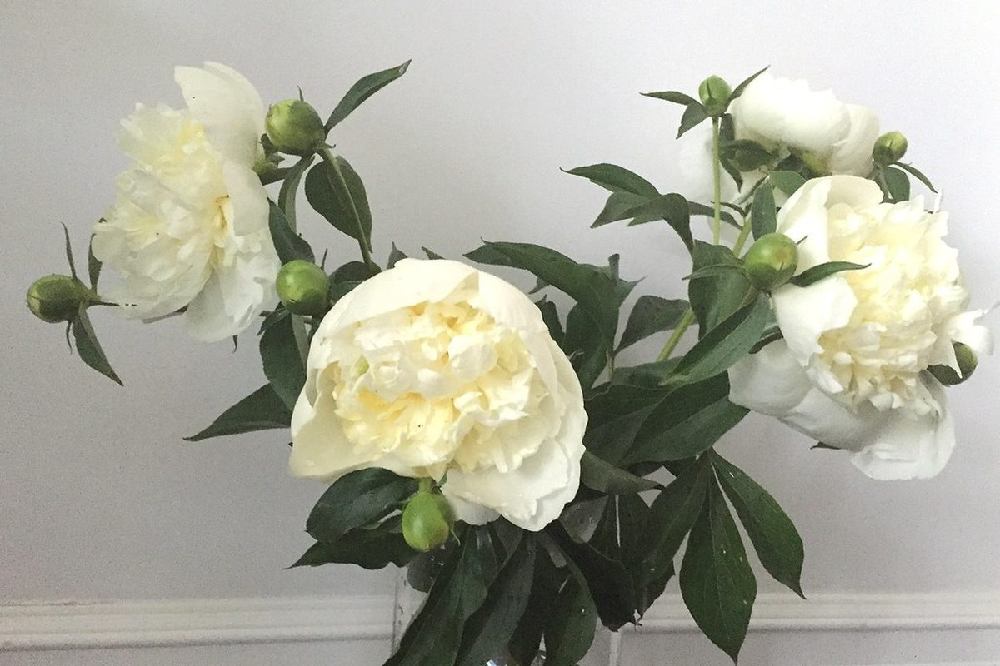

Внимание к деталям / 02
Не просто состав.
Не просто состав.
Живой характер.
Выбирайте готовую композицию или начните с чистого листа. В мастерской можно менять детали, сравнивать варианты и сохранять свой замысел.
Войти в мастерскую →